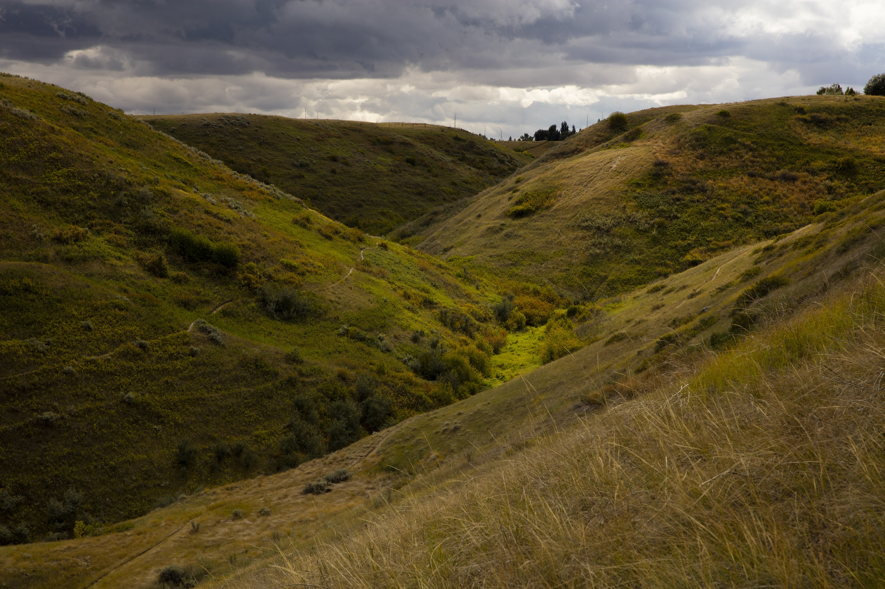

Environmental Conference of the Humanities
Environmental Conference of the Humanities

ECOTH is an open conference that made its debut in November 2025 and encourages emerging scholars (Undergraduate, Master, and PhD students, as well as, post-doctoral researchers and scholars in early stages of their career), along with any academic who is interested in the subject to present their research in this field. Environmental Humanities has emerged as an interdisciplinary subject and embraces the fact that environmental concerns are, in their nature, interdisciplinary.
For information please contact:
The next conference will take place at the University of Lethbridge on Friday, November 6th, 2026. It will be held in the Science Attrium at the Lethbridge Campus.
Dr. Natasha Rebry
Jocelyn McKnight
Our University’s Blackfoot name is Iniskim, meaning Sacred Buffalo Stone. The University of Lethbridge acknowledges and deeply appreciates the Siksikaitsitapi peoples’ connection to their traditional territory. We, as people living and benefiting from Blackfoot Confederacy traditional territory, honour the traditions of people who have cared for this land since time immemorial. We recognize the diverse population of Aboriginal peoples who attend the University of Lethbridge and the contributions these Aboriginal peoples have made in shaping and strengthening the University community in the past, present, and in the future.